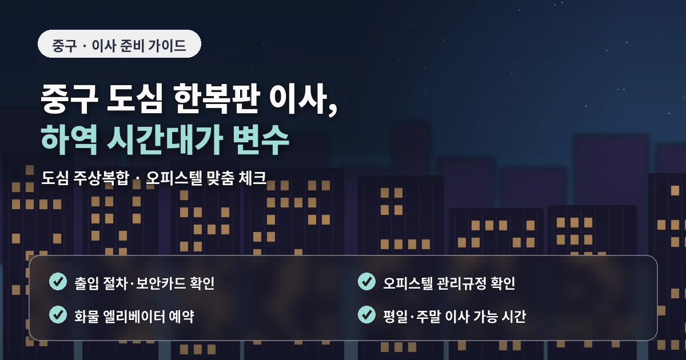
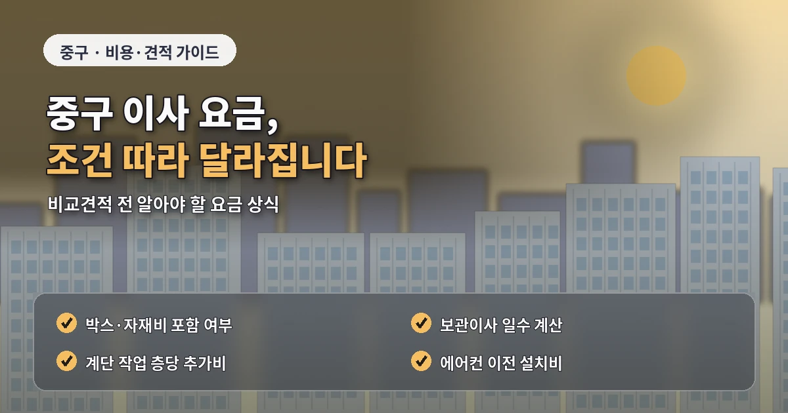
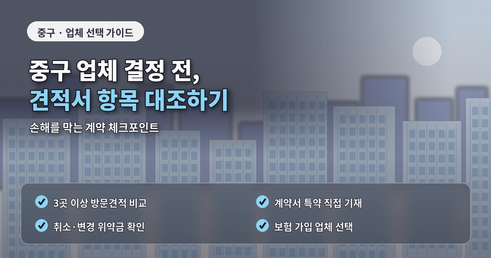

서울 중구포장이사추천 도심주거 비용 비교
중구 포장이사는
도심 주거지와 상가주택,
오피스텔과 오래된 건물이 함께 있어
차량 동선과 작업 시간을 신중하게 봐야 합니다.
신당동과 황학동은 상가주택과 주거지가 섞여 있고,
회현동과 필동은 도심형 주거와 오래된 건물이 함께 있습니다.

중구 포장이사 비용은
짐의 양뿐 아니라
차량 대기 가능 여부,
도로 혼잡,
엘리베이터 사용,
계단 이동,
상가 주변 운반 거리에 따라 달라질 수 있습니다.
견적을 바꾸는 현장 조건
도심 지역은
화물차가 오래 정차하기 어려운 곳이 많습니다.
차량을 건물 앞에 바로 세우지 못하면
작업자가 짐을 옮기는 거리가 길어지고
장거리 운반비가 발생할 수 있습니다.
이 부분은 견적 단계에서 반드시 확인해야 합니다.
오피스텔이나 도심형 건물은
관리 규정도 중요합니다.

이사 가능 시간,
화물 엘리베이터 예약,
지하주차장 높이 제한,
보양 범위를 미리 확인하지 않으면
당일 작업이 지연될 수 있습니다.
업체 비교 전 살펴볼 기준
중구 포장이사 업체추천을 볼 때는
도심 작업 경험이 있는지 확인하는 것이 좋습니다.
상가와 주거가 가까운 지역은
작업 시간대와 차량 대기 위치가
일반 주거지보다 더 중요합니다.
견적서에는
작업 인원,
차량 대수,
포장 범위,
계단 운반 여부,
장거리 운반 기준,
보양 범위,
파손 보상 기준이 포함되어야 합니다.
포장이사 비교견적은
같은 조건으로 받아야 합니다.
출발지와 도착지의 층수,
엘리베이터 사용 가능 여부,
차량 진입 조건,
짐의 양,
대형가전 수량,
분해가 필요한 가구를
모든 업체에 동일하게 전달해야 합니다.
신당동이나 황학동 상가주택은
주변 영업 시간도 고려해야 합니다.

추가비용을 줄이는 준비 방법
상가 운영 시간과 이사 시간이 겹치면
차량 대기가 어렵고
짐을 옮기는 동선이 제한될 수 있습니다.
가능하면 비교적 한산한 시간대를 함께 문의하는 것이 좋습니다.
추가비용을 줄이려면
이사 전 짐을 줄이는 것이 효과적입니다.
도심형 이사는 운반 거리가 길어질 수 있어
불필요한 물건이 많으면 작업 시간이 쉽게 늘어납니다.
버릴 가구,
폐기할 가전,
사용하지 않는 박스 물품을 정리하면
견적 부담을 낮출 수 있습니다.
계약 전에는
일정 변경과 취소 규정도 확인해야 합니다.
계약 전에 확인할 세부 항목
도심 건물은 엘리베이터 예약이나 차량 출입 시간이 정해져 있어
일정이 바뀌면 다시 조율해야 할 수 있습니다.
중구 포장이사는
도심 교통과 건물 규정을 함께 고려해야
현실적인 견적을 받을 수 있습니다.
비용, 견적, 업체추천을 비교할 때도
작업 시간과 차량 동선을 중점적으로 확인하는 것이 좋습니다.
중구 포장이사에서
작업 전 건물 관리실 확인은 매우 중요합니다.
도심 건물은 출입구가 좁거나
화물 엘리베이터 위치가 일반 출입구와 다를 수 있습니다.
업체가 도착한 뒤 이동 경로를 찾으면
작업 시작 시간이 늦어질 수 있습니다.
이사 전에는 관리실에 차량 진입 위치와
엘리베이터 사용 가능 시간을 확인해두는 것이 좋습니다.
또한 중구는 도로 혼잡이 심한 시간대가 있으므로
오전 작업과 오후 작업의 차이를 비교해보는 것도 도움이 됩니다.
시간을 잘 맞추면 차량 대기와 운반 지연을 줄일 수 있습니다.
이런 준비가 중구 포장이사 비용과 일정 관리에 직접적인 영향을 줍니다.
중구 포장이사에서는 시간대 선택이 비용 관리와 연결될 수 있습니다.
도심 도로는 출퇴근 시간과 점심 시간대에 혼잡이 커질 수 있고,
상가 주변은 영업 시간에 차량 정차가 어려울 수 있습니다.
업체와 상담할 때 가능한 작업 시간대를 여러 개로 문의하면
더 현실적인 일정을 잡는 데 도움이 됩니다.
또한 도심 건물은 엘리베이터 위치와 화물 출입구가 일반 출입구와 다를 수 있습니다.
작업자가 도착한 뒤 이동 동선을 찾으면 시간이 지체되므로
관리실에 화물 이동 경로를 미리 확인해두는 것이 좋습니다.
중구 포장이사는 사무공간과 주거공간이 가까운 지역이 많아
작업 중 소음이나 통행 관리도 확인하는 것이 좋습니다.
건물 관리실과 작업 가능 시간을 미리 맞춰두면
현장 지연을 줄이고 업체 작업 순서도 더 안정적으로 잡을 수 있습니다.
도심 이사는 시간 조율이 견적 정확도를 높입니다.
관리실 확인과 차량 대기 위치 조율은 도심 이사에서 꼭 필요한 과정입니다.
사전 조율이 끝나면 작업 흐름도 안정적입니다.
자주 묻는 질문
A. 차량 정차가 어려운 곳이 많아 대기 위치와 운반 거리를 확인해야 합니다.
A. 엘리베이터 예약, 지하주차장 높이, 보양 규정을 먼저 확인하는 것이 좋습니다.
A. 영업 시간이나 운반 거리, 계단 작업에 따라 비용이 달라질 수 있습니다.